영상 편집, 구글 업무, 데이터 수집
발표자는 10개를 고객 일의 흐름에 맞춰 나눠요. 앞의 다섯 개는 고객을 따내는 데 쓰고, 뒤의 다섯 개는 고객이 실제로 무언가를 맡겼을 때 만들고, 점검하고, 알리는 데 써요. 아래 그림은 영상에서 말로 나눈 이 구분을 한 장에 옮긴 거예요.
영상 끝에서 열 개를 한 화면에 다시 보여 줘요. 가운데 원을 둘러 01 Hyperframes부터 10 Open SEO(Search Engine Optimization)까지 번호 순서대로 돌아가요.
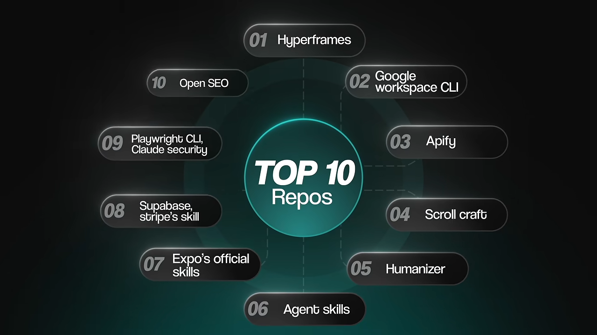
01 Hyperframes — 말로 시키는 영상 편집
Hyperframes는 HeyGen이 만든 오픈소스예요. Claude에게 원하는 영상을 말로 설명하면 HTML(HyperText Markup Language)과 애니메이션으로 장면을 짜고, 그걸 내 컴퓨터에서 진짜 MP4(MPEG-4 Part 14) 파일로 렌더링해요. 자막, 모션 그래픽, 타이틀 카드, 제품 홍보 영상까지 만들 수 있어요. 발표자는 여기서 멈추지 않고 Hyperframes 위에 유튜브 인트로, 인스타그램 릴스, 강의 영상, 광고용 스킬을 따로 얹어 써요.
실제 쓰는 모습은 단순해요. 아래 화면 오른쪽 아래 입력창에 MP4 클립 하나를 붙이고 "자막과 타이틀 카드를 붙여 줄래요?"라고 적은 게 전부예요. 발표자는 몇 분 뒤 완성 파일을 받는다고 해요.
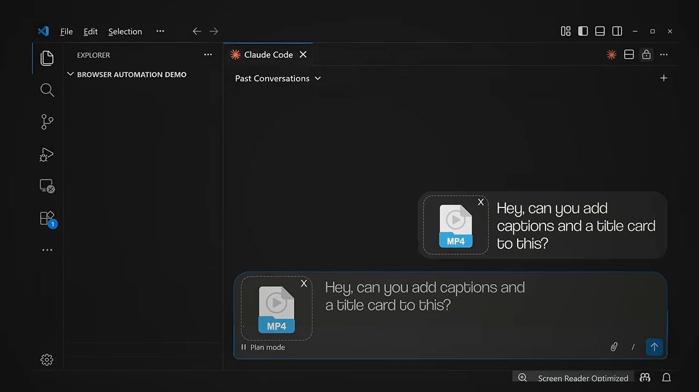
비슷한 일을 하는 도구로 Remotion이 있어요. 화면은 두 카드를 나란히 놓고 오른쪽 Hyperframes 카드에 렌더링된 영상 썸네일을 띄워요. 발표자는 Hyperframes 쪽이 훨씬 잘 맞았다고 하고, 협찬 영상이 아니라는 점도 짚어요.
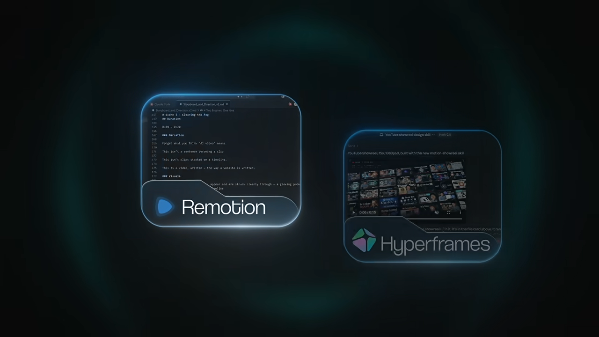
돈이 되는 지점도 구체적으로 짚어요. 영상을 올리는 가게라면 편집을 맡길 곳이 필요해요. 한 달에 자막 클립 20개를 원하는 헬스장 같은 곳에 월정액 콘텐츠 패키지로 팔 수 있다는 거예요.
02 Google Workspace CLI — 구글 업무를 에이전트에 연결
Google Workspace CLI는 Claude가 드라이브, Gmail, 캘린더, 문서, 시트, 슬라이드를 거의 다 다루게 해 줘요. 발표자가 가장 많이 쓰는 레포 중 하나예요. Claude 안에 구글 커넥터가 있긴 하지만, 그건 Claude 데스크톱 앱에서만 되고 기능도 다 덮지 못해요. 이건 명령줄 도구라서 Claude Code, Codex, 직접 만든 에이전트 어디서든 써요.
40개 넘는 스킬이 함께 들어 있어서 Claude가 쓰는 법을 처음부터 알아요. 로그인에 Google Cloud 프로젝트가 필요해 설정에 몇 분이 들지만, 그 과정도 Claude가 단계별로 안내해 줘요. 쓸 앱만 골라 권한을 주면 돼요. 작은 회사는 대부분 구글로 일하니 주간 보고서, 청구서, 후속 메일 자동화로 바로 이어져요.
03 Apify — 막힌 사이트의 데이터를 가져오기
정확히는 Apify MCP(Model Context Protocol) 서버예요. Claude가 혼자서는 닿지 못하는 데이터가 많아요. 아래 그림은 그 이유를 보여 줘요. Claude에서 인스타그램과 레딧으로 가는 점선 위에 'Blocked'와 'JavaScript required' 두 빨간 표시가 붙어 있고, 결과로 빈 창 하나만 돌아와요.
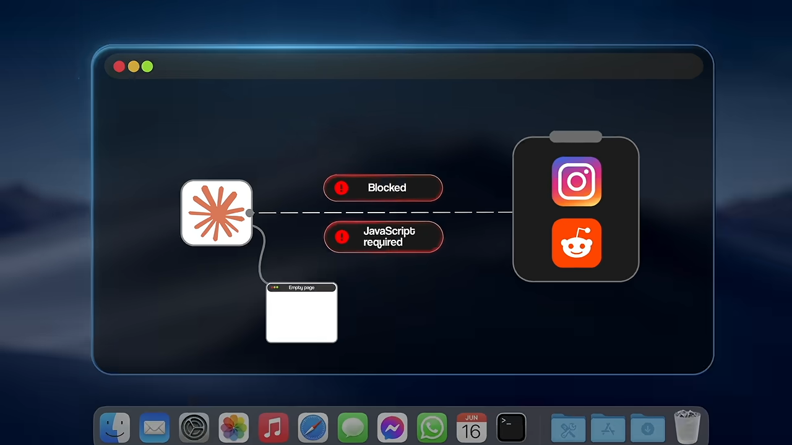
Apify는 인스타그램, 틱톡, 아마존 같은 사이트용 스크래퍼 수천 개에 Claude를 연결해요. 발표자의 예시 요청은 "시카고 베이커리를 인스타그램에서 찾아 팔로워 수를 알려 주고, 영상을 내려받고, 소개란에 웹사이트가 없는 곳을 보여 줘"예요. 몇 분 뒤 'Bakeries in Chicago'라는 스프레드시트가 돌아와요.
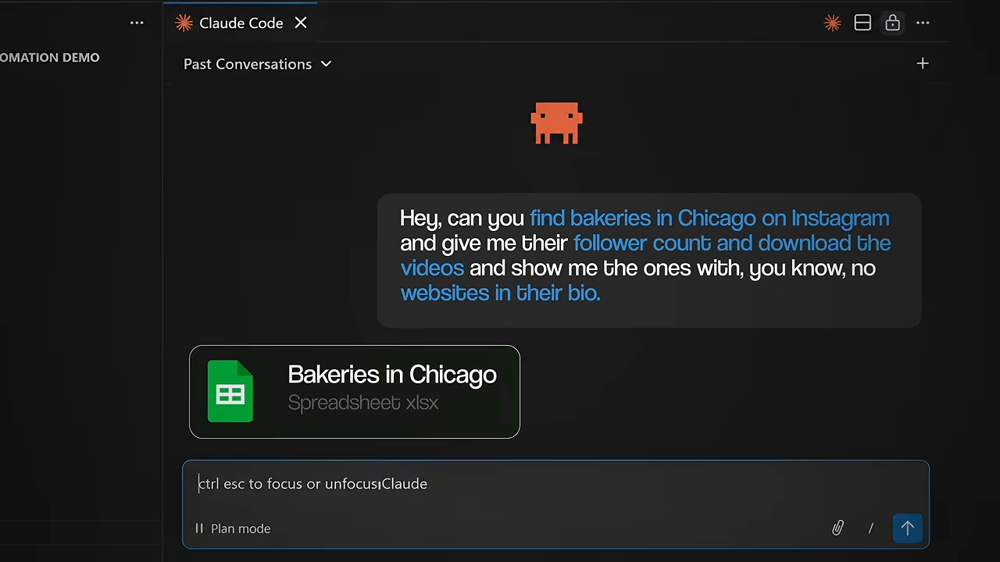
커넥터는 오픈소스지만 스크래퍼는 Apify 클라우드에서 돌아서 비용이 들 수 있어요. 요금 화면 맨 왼쪽 Free 플랜은 0달러에 매달 Apify 스토어나 직접 만든 Actor에 쓸 5달러를 줘요. 스크래퍼에 따라 결과 건당 돈을 따로 받는 것도 있어요.
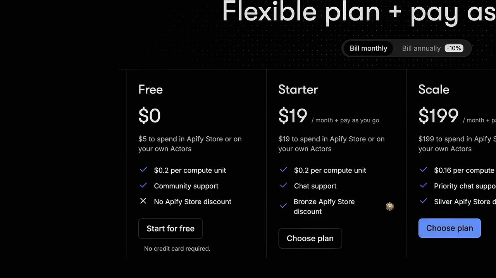
웹사이트와 사람 같은 문구
04 Scrollcraft — 스크롤이 영화처럼 움직이는 사이트
Scrollcraft는 발표자가 직접 만든 레포라고 먼저 밝혀요. 목표는 애플 제품 페이지 같은 사이트예요. 스크롤을 내리면 페이지가 영화처럼 움직이고 여러 레이어가 겹쳐 보여요. 아래 화면이 그런 예로, 아이폰 두 대 위로 'Take a closer look.' 문구가 깔려 있어요.
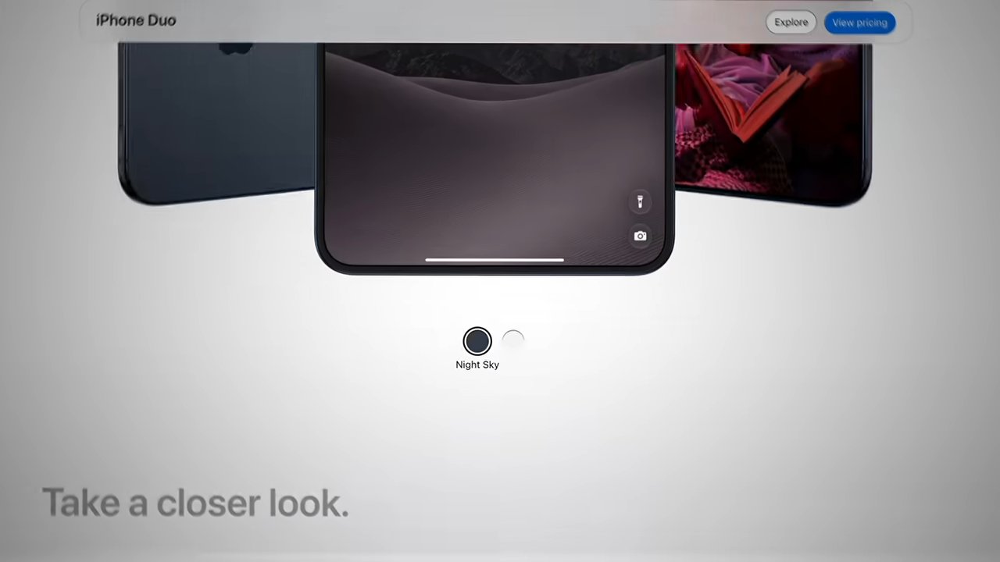
Scrollcraft는 Claude에게 두 가지를 줘요. 진짜 스크롤 엔진, 그리고 발표자가 여러 사이트를 만들며 모은 디자인 규칙이에요. 여기에 검사기('CHECKER')가 붙어 있어요. 스크롤 장면을 캡처하고 요소 위치를 확인해서, 사람이 지적하기 전에 Claude가 먼저 고치게 해요.
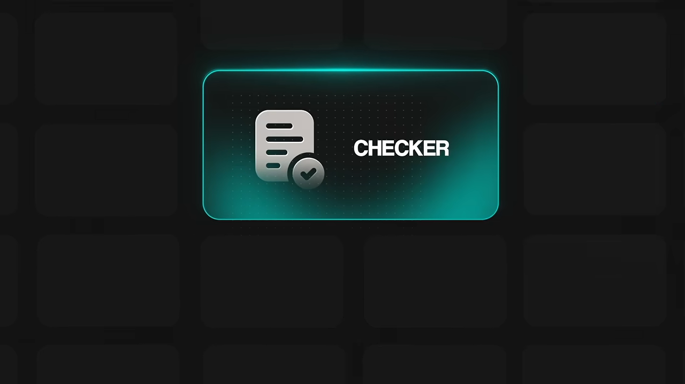
모든 사이트가 화려한 스크롤 사이트일 필요는 없어요. 발표자는 이 레포가 다루는 감각을 화면 왼쪽 목록으로 보여 줘요. Taste, Depth, Layering, Spacing, Typography, Color schemes 여섯 항목에 모두 체크가 붙어 있어요.
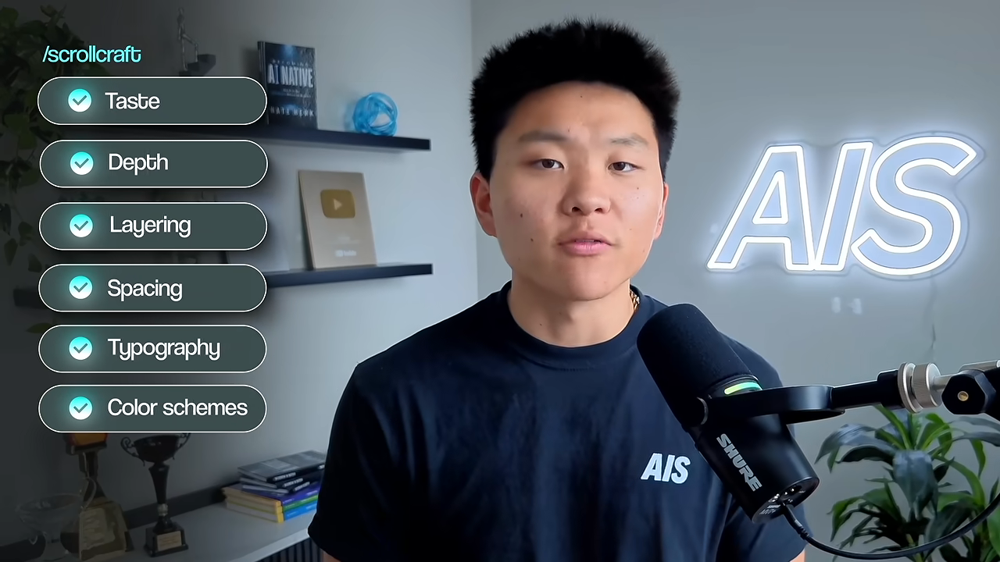
돈이 되는 이유도 짚어요. AI(Artificial Intelligence) 덕분에 기본 랜딩 페이지는 흔해졌어요. 그래도 온라인으로 파는 브랜드는 바이브 코딩으로 쉽게 나오지 않는 맞춤 스크롤 경험에 여전히 디자이너 비용을 낸다는 거예요.
05 Humanizer — AI 티 나는 문구 걷어 내기
Humanizer는 Claude가 쓴 글이 AI 슬롭처럼 들리지 않게 해요. 위키백과 편집자들이 AI가 쓴 글을 가려낼 때 쓰는 가이드를 바탕으로 만들었어요. 그래서 읽자마자 'AI가 썼네' 싶은 신호를 알아봐요. 화면은 그 신호 네 가지를 번호로 늘어놔요.
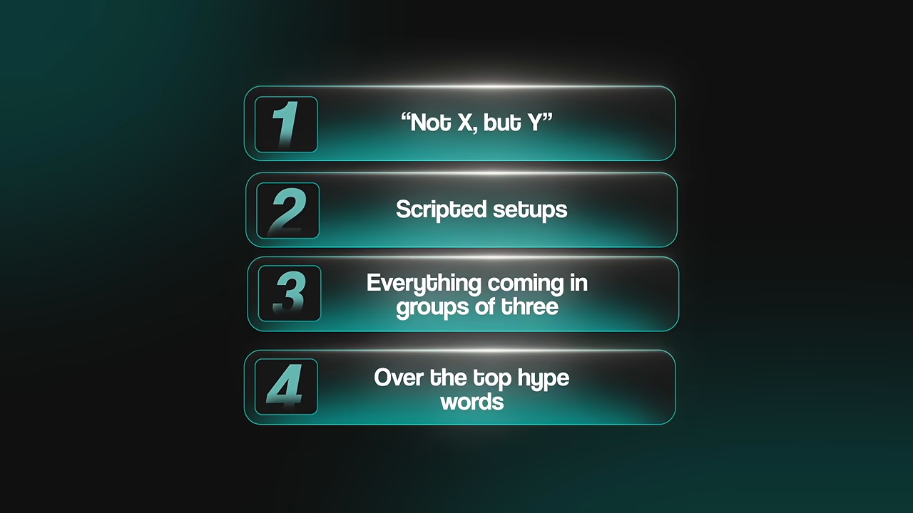
쓰는 법은 붙여 넣고 시키는 게 전부예요. 아래 화면에서는 웹사이트 문구 'Build Better. Move Faster.'와 콜드 메일 초안에 각각 /humanizer 명령을 붙였어요. 메일은 'I came across your company and wanted to reach out'으로 시작하는, 받는 사람이 금방 넘겨 버릴 법한 문장이에요.
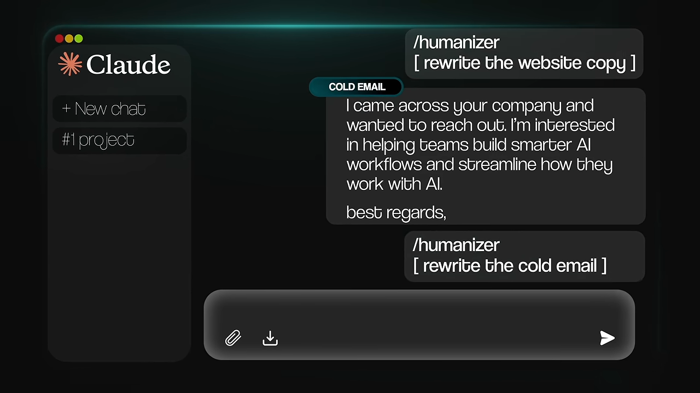
발표자는 사람이 쓴 것처럼 읽히는 문구가 AI가 만든 문구보다 훨씬 설득하기 쉽다고 봐요. 여기까지 다섯 개가 고객을 따내는 도구예요.
실제로 앱을 만들 때
여기부터는 고객이 실제로 무언가를 맡겼을 때예요. 발표자가 드는 예는 고객이 온라인으로 예약하고 보증금을 내게 하고 싶은 청소 업체예요.
06 Agent Skills — 계획을 대화 밖 파일로
한두 시간 작업하다 보면 Claude가 앞 내용을 다 잊은 듯 엉뚱한 답을 하기 시작해요. 긴 세션은 압축(compact)되거나 컨텍스트 로트에 빠져서, 앞서 정한 세부 사항이 요약되며 사라지거든요. Addy Osmani의 Agent Skills는 계획을 대화에서 꺼내 파일로 옮겨서 이걸 막아요. 발표자는 그가 구글에서 14년 일했고 지금은 Anthropic에서 Claude Code를 만든다고 소개해요.
흐름은 명령 세 개예요. 아래 그림처럼 단계마다 결과가 파일로 남아서, 세션이 엉키면 새 세션을 열고 그 자리부터 이어 가요.
flowchart LR A["/spec
함께 스펙 쓰기"] --> B["/plan
작은 작업으로 쪼개기"] --> C["/build
하나씩 확인하며 만들기"] A -.-> F[("파일로 남은
스펙·계획")] B -.-> F F -.->|"세션이 엉키면"| N["새 세션에서
그 자리부터 이어 가기"]
스펙 단계에서는 사람이 먼저 떠올리기 어려운 질문을 해요. 화면 아래에 뜬 세 단어가 그 예예요. 중복 예약('DOUBLE BOOKINGS'), 환불('REFUNDS'), 다른 시간대의 고객('TIME ZONE')이에요.
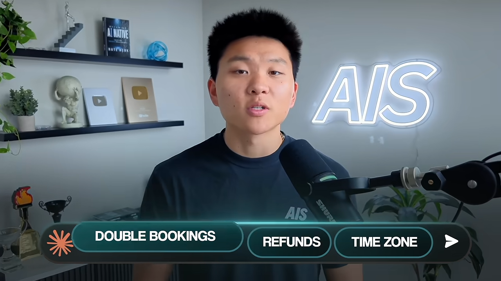
5월 영상에서 소개한 Superpowers도 여전히 좋지만, 입문자에게는 Addy의 것이 따라가기 쉽다고 해요. 개발자가 아니어도 개발자처럼 만들고 싶다면 Matt Pocock의 스킬도 보너스로 추천해요.
07 Expo 공식 스킬 — 모바일 앱
Expo의 공식 스킬을 쓰면 윈도우 컴퓨터에서도 오후 한나절에 아이디어를 내 아이폰에서 돌아가는 앱으로 만들 수 있다고 해요. 스킬에는 앱이 AI로 만든 티가 나는 20가지 목록과 앱스토어 심사를 통과하는 최신 규칙이 들어 있어요. 아래 화면은 그 규칙 쪽 문서로, Expo 저장소의 앱스토어 제출 안내 페이지예요.
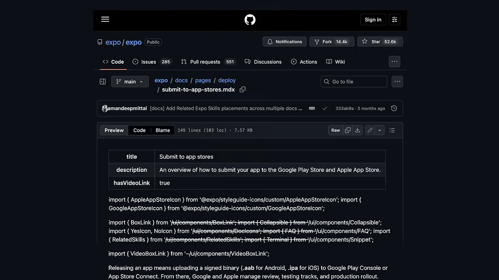
팁이 하나 있어요. 스킬이 저절로 불리지 않을 때가 있으니 Claude에게 Expo 스킬을 이름으로 쓰라고 말해 줘요. 그리고 비용이 하나 있어요. 화면 왼쪽 카드의 '$99 annual membership'처럼, TestFlight나 앱스토어에 올리려면 연 99달러짜리 애플 개발자 계정이 필요해요.
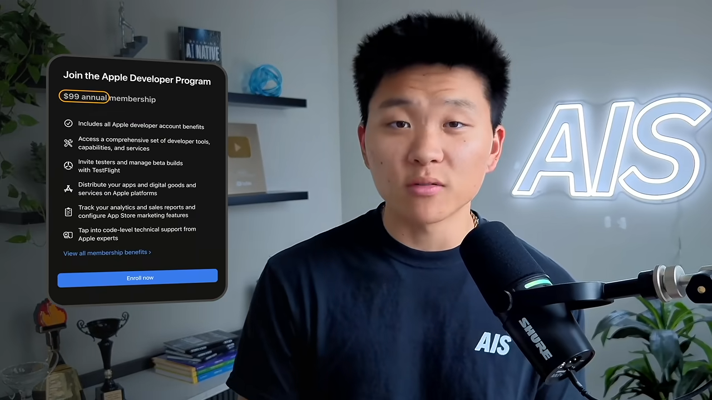
결과물은 이런 모습이에요. 같은 사진 고르기 앱이 안드로이드 화면, 아이폰, 웹 브라우저 세 곳에서 똑같이 돌아가요. 가운데 'Choose a photo' 버튼과 바다 사진이 셋 모두에 보여요.
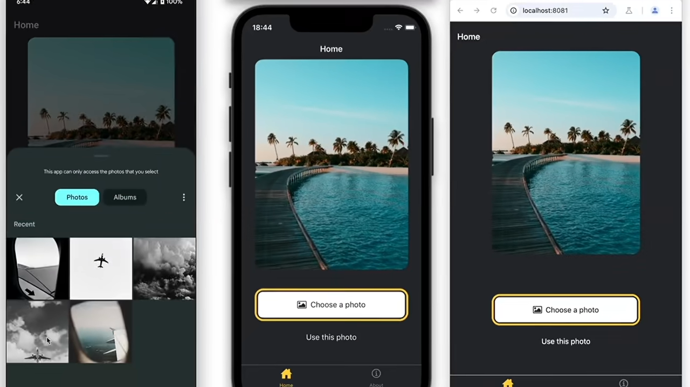
파는 쪽 조언도 붙여요. 대부분의 가게는 이미 Square 같은 소프트웨어를 쓰고 있어요. 그러니 지금 소프트웨어가 맞지 않는 업무 하나를 골라 그 앱을 팔라는 거예요.
08 Supabase·Stripe 공식 스킬 — 로그인, 데이터, 결제
로그인, 데이터베이스, 결제는 거의 모든 앱에 필요해요. 이 두 회사의 공식 스킬을 깔면 Claude가 각 회사의 실제 보안 규칙을 알게 돼요. 아래 그림은 그 구조를 보여 줘요. 왼쪽 Claude에서 가운데 방패 아이콘을 거쳐 오른쪽 'Companies' 묶음과 데이터베이스로 이어져요.
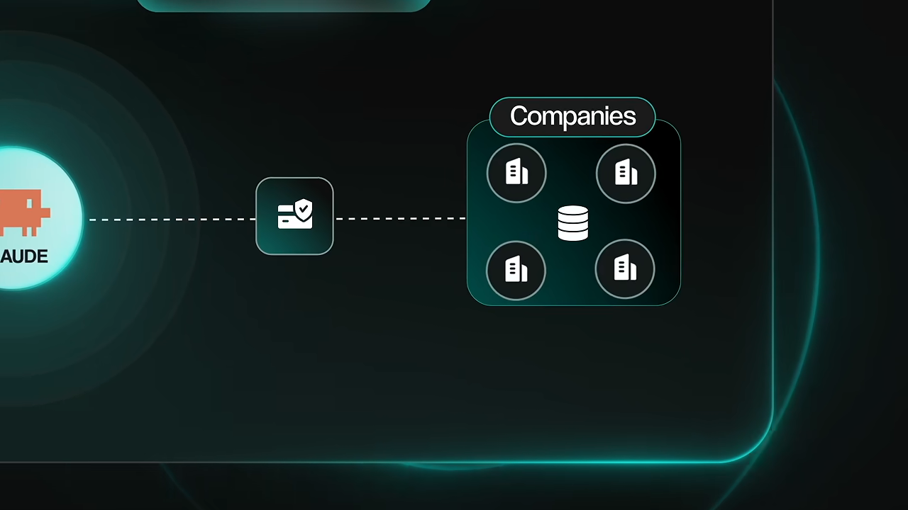
발표자는 깔 때 주의할 점 두 가지를 짚어요.
| 대상 | 발표자의 권장 | 이유 |
|---|---|---|
| Stripe | 'Stripe best practices' 스킬 하나만 깔아요 | 플러그인 전체를 깔면 결제와 상관없는 결정까지 Stripe 쪽으로 끌고 갈 수 있어요 |
| Supabase | 커넥터를 읽기 전용으로 두고, 출시 전 테스트 사용자로 로그인해 봐요 | 다른 사용자의 데이터가 보이지 않는지 직접 확인하려는 거예요 |
백엔드와 결제는 헷갈리기 쉬운 영역이라, 바이브 코딩으로 만드는 사람일수록 보안이 걱정된다면 이 스킬을 쓰라고 해요.
넘기기 전 점검과 출시 뒤 노출
09 Playwright CLI와 Claude Security — 넘기기 전 점검
고객이나 인터넷에 무언가를 내놓기 전에 돌리는 도구예요. Claude는 "네, 잘 돼요"라고 쉽게 말하지만, 실제로 버튼을 눌러 확인하지 않았을 수 있어요. Microsoft의 Playwright CLI는 진짜 브라우저를 열고 고객처럼 앱을 클릭해 봐요. 그리고 몇 번이고 다시 돌릴 수 있는 테스트를 써 줘요.
아래 화면은 폼 제출 앱을 점검한 기록이에요. Claude가 단계마다 찍은 스크린샷(qa-01-initial-load.png, qa-02-validation-error.png 등)을 읽고 나서 버그 두 개를 찾았다고 보고해요. 첫 번째는 메모 칸에서 Enter를 눌러도 다음 단계로 넘어가지 않는 문제예요.
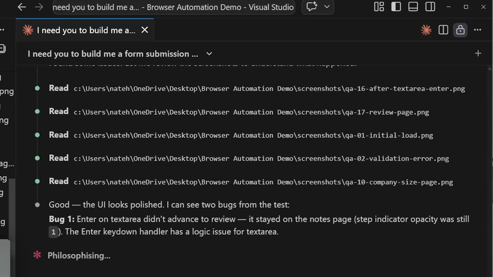
MCP가 아니라 명령줄 도구라는 점도 짚어요. 화면은 왼쪽 'command line' 창과 오른쪽 'Context' 폴더를 점선 하나로만 이어요. 페이지 전체를 Claude 컨텍스트에 쏟아붓지 않는다는 뜻이에요.
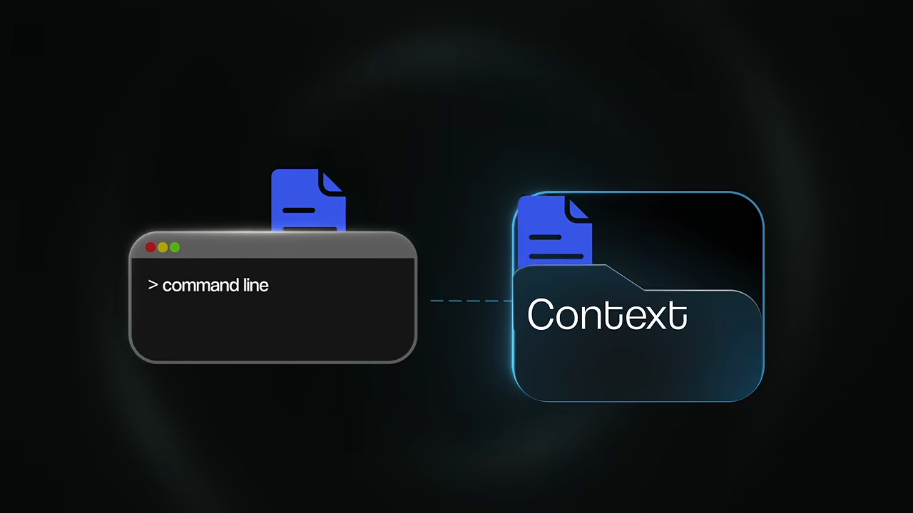
같은 번호에 Claude Security도 묶어요. Anthropic의 보안 플러그인이에요. 화면은 가운데 자물쇠 아이콘에서 'AGENT #1'부터 '#4'까지 네 에이전트로 점선이 뻗는 모습이에요.
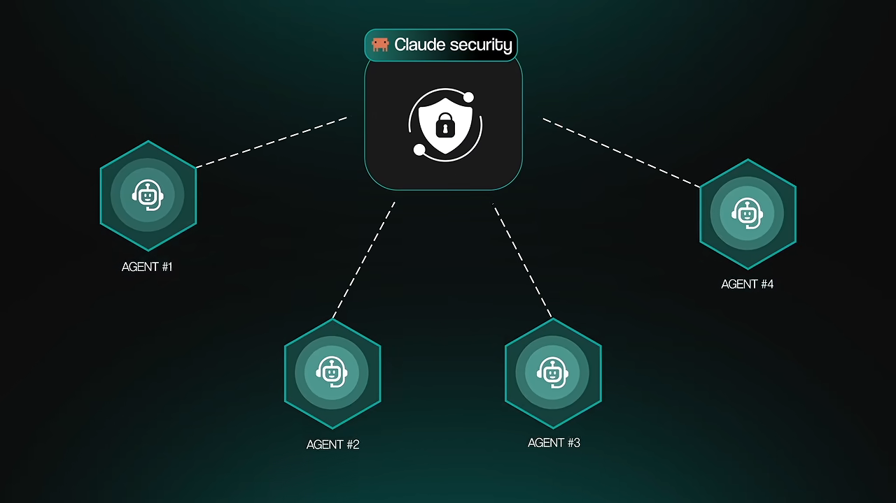
고객은 이런 테스트 자체에는 관심이 없어요. 신경 쓰는 건 화면 왼쪽 위 두 항목이에요. 예약 폼이 제대로 작동하는지(Booking form works), 고객 데이터가 새지 않는지(Data stays private)예요.
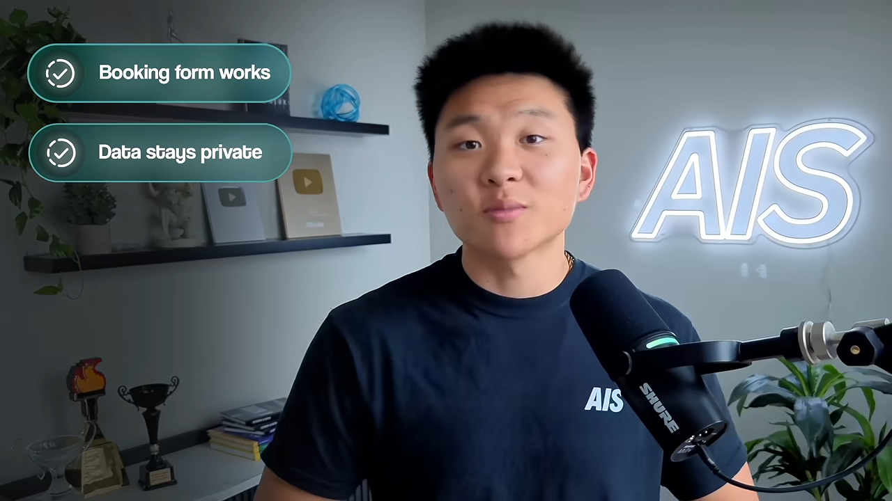
10 Open SEO — 출시 뒤 찾아오게 하기
사이트나 앱이 공개되면 이제 사람들이 찾아와야 해요. Open SEO는 Claude를 실제 키워드 데이터, 순위, 백링크에 연결해요. 그래서 '좋은 콘텐츠를 쓰세요' 같은 일반론 대신, 정확히 어느 페이지가 어느 키워드에서 어디쯤 있는지 알려 줘요. 에이전시들은 이런 진단을 내밀어 월 SEO 리테이너를 따낸다고 해요.
주의할 점은 두 가지예요. 무료 체험 크레딧이 적고, 직접 호스팅하지 않으면 데이터가 그쪽 서버에 남아요. 아래는 사용량을 넣어 보면 한 달 요금을 계산해 주는 화면이에요. 키워드 검색은 건당 약 0.05달러, 백링크 확인은 약 0.08달러로 적혀 있고, 이 설정으로는 월 10달러가 나와요.
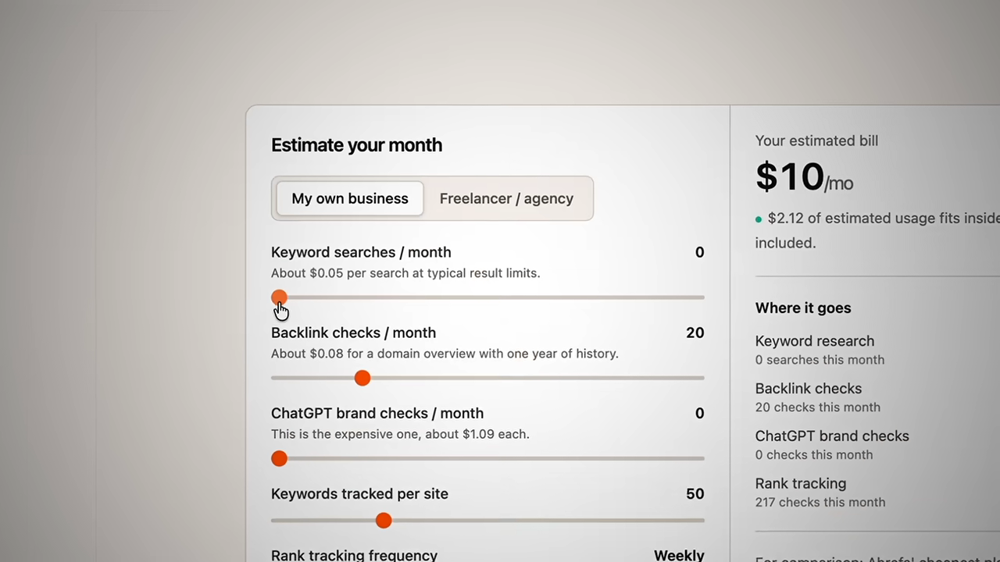
토큰 절약 레포는 기대만큼 아낄까요
토큰 절약 레포의 실제 효과
Caveman, RTK(Rust Token Killer), Ponytail 같은 토큰 절약 레포도 자주 거론돼요. 발표자는 JetBrains가 실제 코딩 작업으로 셋을 시험한 결과를 전해요. 화면의 수치를 한 그래프에 모으면 이래요. 주황 막대가 광고한 절약률, 파란 막대가 측정된 절약률이에요.
먼저 Caveman이에요. 왼쪽 'Advertised 65%' 표시 옆 원 안에 측정치 8.50%가 크게 떠 있어요. 출력 토큰 기준이에요.
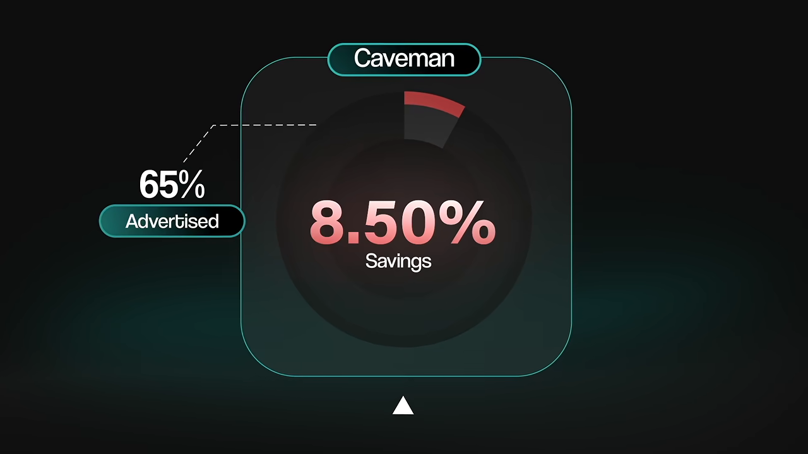
RTK는 더 나빠요. 카드 가운데 절약률은 0%이고, 왼쪽에는 빨간 'Became expensive' 표시가 붙어 있어요.
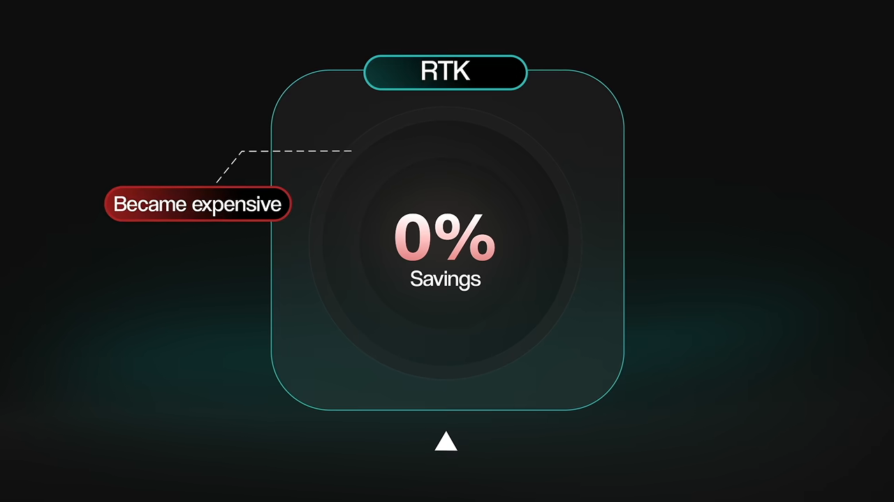
Ponytail만 실제로 돈을 아꼈어요. 원 안의 10%가 작업당 절약률이고, 왼쪽 'Advertised 20%'의 딱 절반이에요.
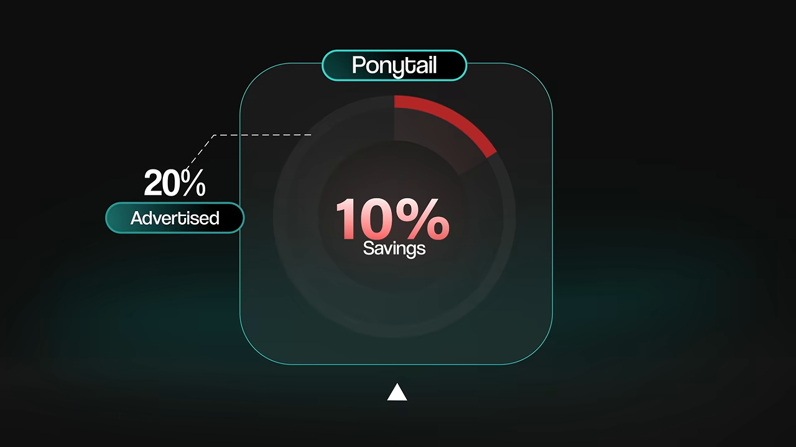
토큰이 실제로 어디로 새는지 보고 싶다면 Codeburn을 권해요. 지출을 보여 주고, 쓰지도 않는데 메시지마다 불러오는 MCP 서버 같은 낭비를 짚어 줘요.
당분간 미룰 레포
발표자가 5월 영상에서 추천했던 두 레포는 지금은 미루라고 해요. 화면은 두 칸을 나란히 놓고 각각 /CLAUDE-MEM과 /CONTEXTMODE라고 적어요.
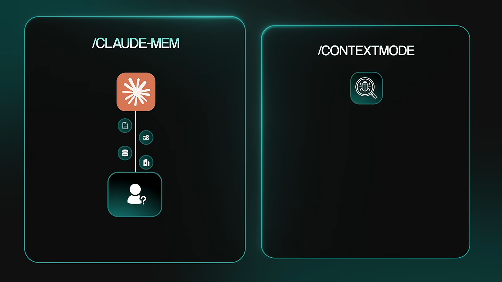
| 레포 | 미루라는 이유 |
|---|---|
| Claude Mem | 기본 설정으로 사용 데이터를 밖으로 보내요 |
| Context Mode | 사용량을 크게 태울 수 있는 버그가 열려 있어요 |
어디서부터 시작할까요
처음이라면 오늘 다 깔지 말라고 해요. 한꺼번에 깔면 뭔가 고장 났을 때 어느 레포 때문인지 알 수 없어요. 지금 가장 자주 부딪히는 문제 하나를 푸는 레포부터 골라요. 잘 모르겠으면 Google Workspace CLI, Apify, Scrollcraft 중 하나로 시작하고, 가장 간단한 Humanizer도 함께 써 보라고 해요.
발표자가 제안하는 첫 일감은 화면 아래 네 칸으로 정리돼 있어요. 웹사이트 없는 업체 찾기(Find businesses), 샘플 페이지로 사이트 만들기(Build website), 문구 다듬기(Clean up copy), 링크 보내기(Send the link)예요.
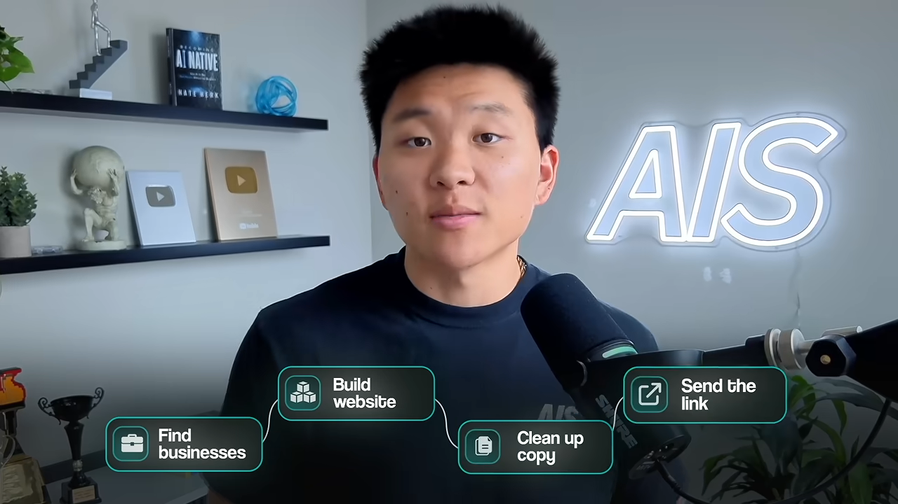
No one's going to pay you for a GitHub repo, those are free, everyone can install them.
GitHub 레포 값으로 돈을 주는 사람은 없어요. 무료라서 누구나 깔 수 있으니까요.
— 영상 10:12
그래서 파는 건 레포가 아니라, 그걸로 만들어 고객의 문제를 푸는 결과물이라는 게 영상의 마지막 말이에요.